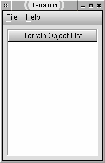
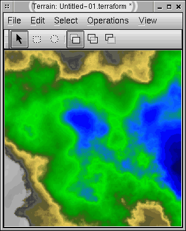
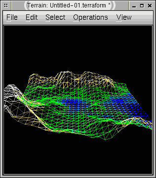
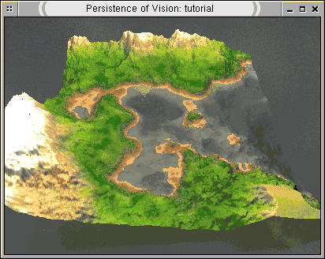

This is a quick tutorial designed for the first time user.
This is the main window:

The main window enables the user to open terrain windows. The user may load a terrain from a file or create a new one.
There are various algorithms available for generating a new terrain. We will let Terraform choose one by selecting File > New > Random. This is the easiest way to make a new height field.
The terrain window will look like this:

Select the 3D wireframe model view by choosing the View > Type > 3D Wire. Drag the cursor inside the viewport to rotate the wireframe as desired. Feel free to try out the other views.
3D Wire view:

Go to your terrain window, select File > Render > POV-Ray and a raytracing window should appear.
If you get an error message, there was a problem executing POV-Ray. You may find out more information by clicking the "Details" button. Consult POV-Ray's documentation if the executable is found but POV-Ray reports an error.
POV-Ray terrain render window:

You have generated and rendered your first scene.
From here, you may wish to save it to a *.terraform file or perform various operations on the terrain. Consult the Users Guide for more information.